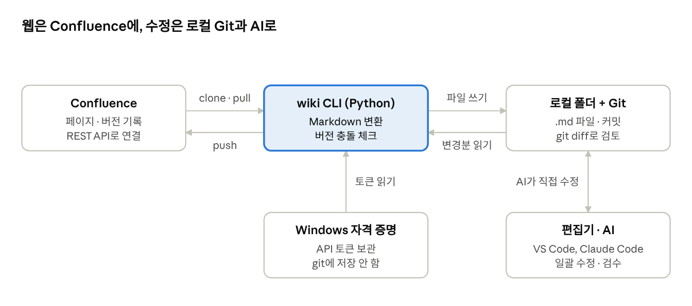

Confluence Git 동기화 도구 제안
Confluence 위키를 Git 저장소처럼 clone해서 로컬에서 수정하고, 바뀐 페이지만 다시 올리는 도구를 제안합니다. AI가 수정·검수를 돕습니다.
배경
웹 에디터로는 여러 페이지를 한 번에 고치거나, 바뀐 내용을 미리 비교해 보기 어렵다. 개발자에게 익숙한 Git 방식(Docs-as-Code)으로 위키를 다루면 일괄 수정, 변경 검토, AI 자동 수정이 모두 가능해진다.
- 같은 내용(서버 주소, 버전 번호 등)이 여러 페이지에 흩어져 있어 하나씩 수정해야 함
- 수정 전후를 한눈에 비교하거나 동료에게 리뷰받기 어려움
- VS Code, AI 코딩 도구 같은 익숙한 편집 환경을 쓸 수 없음
- 기존 오픈소스(mark 등)는 올리기(push)만 지원하고, 받아오기(pull)는 약함
구성
새로 만드는 것은 wiki CLI 하나뿐이고, Confluence·Git·편집기는 기존 도구를 그대로 쓴다.

CLI가 Confluence와 로컬 폴더 사이를 양방향으로 이어주고, AI는 로컬 파일만 수정한다. 그래서 웹에 반영되기 전에 항상 사람이 diff를 확인할 수 있다.
사용 방법
명령어는 wiki 하나이며, Git과 같은 순서(pull → 수정 → diff → push)로 쓴다.
| 명령어 | 하는 일 |
|---|---|
wiki login | Confluence 사이트 주소와 API 토큰 등록 (Windows 자격 증명 관리자에 저장) |
wiki clone <스페이스 키> | 스페이스 전체를 페이지 트리 그대로 로컬 폴더에 .md로 받고 git init + 첫 커밋 |
wiki pull | 웹에서 바뀐 페이지만 받아 새 커밋으로 반영 |
wiki status | 로컬에서 수정·추가·삭제한 페이지 목록 |
wiki diff | 올리기 전 페이지별 변경 내용 확인 (git diff 기반) |
wiki push | 바뀐 페이지만 Confluence에 반영, 새 파일은 새 페이지로 생성 |
wiki push --dry-run | 실제로 올리지 않고 무엇이 바뀔지만 출력 |
예시 흐름:
> wiki clone DEV
132개 페이지 다운로드 → C:\wiki\DEV
> code C:\wiki\DEV # VS Code에서 직접 수정하거나 AI에게 수정 요청
> wiki status
M 개발환경/빌드-서버-설정.md
M 개발환경/Java-설치.md
A 개발환경/러너-장애-대응.md
> wiki push
수정 2건, 신규 1건 반영 완료로컬 폴더 구조
폴더 구조는 Confluence 페이지 트리를 그대로 따른다. 페이지 ID와 버전은 각 파일 상단에 저장해서, 파일을 옮기거나 이름을 바꿔도 같은 페이지로 인식한다.
C:\wiki\DEV\
├─ .wiki\
│ ├─ config.json # 사이트 주소, 스페이스 키
│ └─ index.json # 페이지 ID ↔ 파일 경로, 마지막 pull 버전
├─ .git\
├─ 홈.md
├─ 개발환경\
│ ├─ _index.md # "개발환경" 부모 페이지 본문
│ ├─ Java-설치.md
│ └─ 빌드-서버-설정.md
└─ _attachments\ # 이미지·첨부파일 (다운로드만)파일 상단 메타데이터 예시:
---
id: 123456789
title: Java 설치
version: 14
parent: 123450000
---
# Java 설치
본문...충돌 처리
push 직전에 웹의 현재 버전과 내가 받은 버전을 비교한다. 그사이 누가 웹에서 수정했으면 덮어쓰지 않고 멈춘다.
| 상황 | 동작 |
|---|---|
| 웹 버전 = 내가 받은 버전 | 그대로 올리고 버전 +1 |
| 웹 버전이 더 높음 | 해당 페이지 push 중단, wiki pull로 받아 git merge로 합치도록 안내 |
| 웹에서 페이지가 삭제됨 | 올리지 않고 경고만 출력 |
| 로컬에서 파일 삭제 | 기본은 무시, --allow-delete를 줄 때만 웹에서 삭제 |
웹 수정 기록은 Confluence 버전 기록에, 로컬 수정 기록은 git 커밋에 남아 언제든 되돌릴 수 있다.
AI 활용
위키가 로컬 파일이 되면 Claude Code 같은 AI 코딩 도구가 코드처럼 통째로 읽고 고칠 수 있다. 사람은 wiki diff로 결과만 검토하고 push한다.
| 시나리오 | AI에게 하는 말 (예시) |
|---|---|
| 일괄 수정 | "모든 페이지에서 Java 21을 Java 25로 바꿔줘, 설치 명령어도 같이" |
| 오래된 문서 찾기 | "없어진 서버 주소나 깨진 링크가 있는 페이지 찾아줘" |
| 문서 구조 정리 | "개발환경 폴더에 비슷한 문서가 중복돼 있으면 하나로 합쳐줘" |
| 신규 문서 작성 | "이번 러너 배포 실패 원인을 장애 대응 문서로 써줘" |
| 리뷰 | "이번 변경분에 틀린 내용이나 오탈자 있는지 봐줘" |
팀 단위로는 이 폴더를 사내 Git 저장소에 올려 PR 리뷰 후 push하는 방식도 가능하다.
제약과 주의
가장 큰 제약은 Confluence 매크로다. Markdown에 대응하는 문법이 없어서 원본 그대로 보존하는 방식으로 처리한다.
- 매크로: 목차, 정보 패널, Jira 이슈 표시 등은
<!-- confluence-macro:... -->주석으로 보존하고 push 때 복원. 주석을 지우면 매크로도 사라짐 - 표: 셀 병합이 있는 표는 Markdown으로 표현할 수 없어 HTML 표로 유지
- 첨부파일: 1차 범위에서는 다운로드만 지원, 업로드는 이후 단계
- 권한: 내 계정 권한으로 볼 수 있는 페이지만 clone되고, 수정 권한이 없는 페이지는 push 시 건너뜀
- 토큰 보관: API 토큰은 폴더나 git에 저장하지 않고 Windows 자격 증명 관리자에만 저장
- 안전장치: 처음에는 텍스트 위주 페이지로 시작하고, push는
--dry-run으로 먼저 확인
개발 계획
접수 마감(11/26) 전까지 clone·pull·push 핵심 기능과 데모 영상을 끝낸다. Python 스크립트로 만들고 Windows에서 우선 검증한다.
| 기간 | 범위 |
|---|---|
| 11/10 ~ 11/14 | login, clone: Confluence REST API로 페이지 트리 받기, Markdown 변환, git init |
| 11/17 ~ 11/20 | status, diff, push: 변경 감지, 버전 충돌 체크, 매크로 보존 |
| 11/21 ~ 11/24 | pull, AI 일괄 수정 시나리오 테스트 (내 개인 스페이스) |
| 11/25 ~ 11/26 | 데모 영상(clone → AI 수정 → push), 제출용 PPT 정리 |